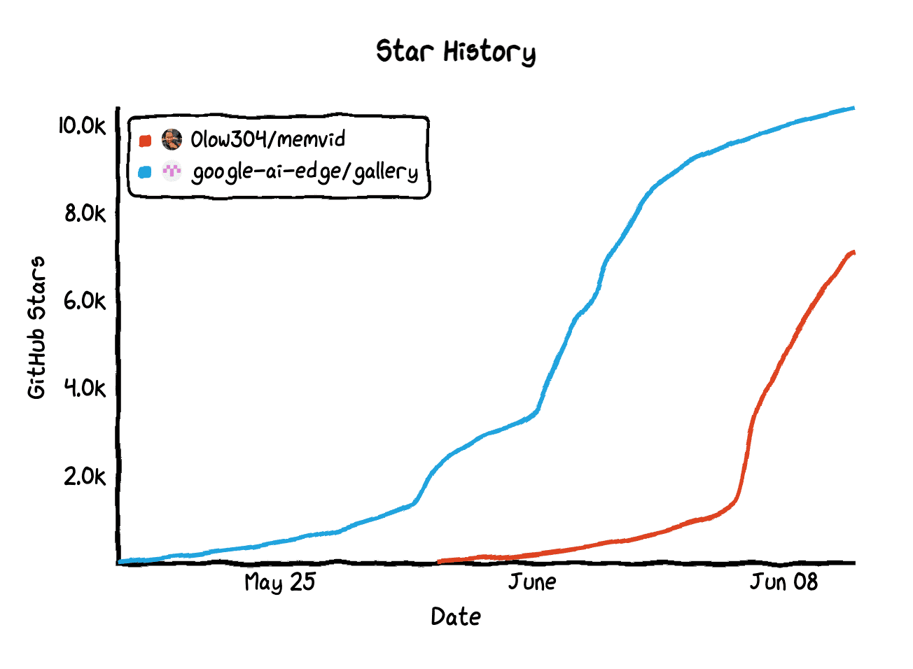
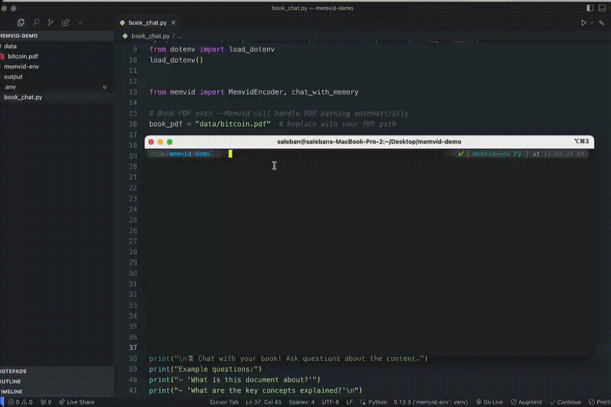
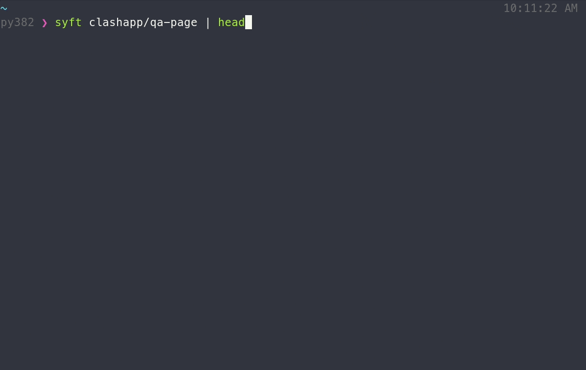
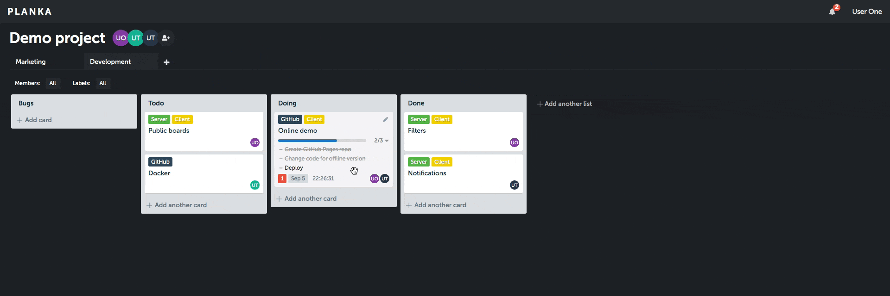
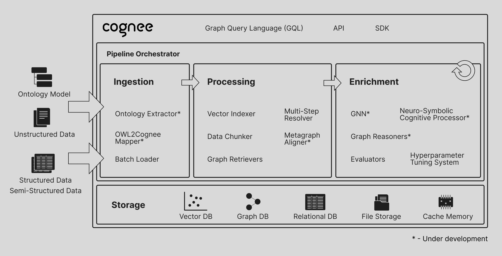
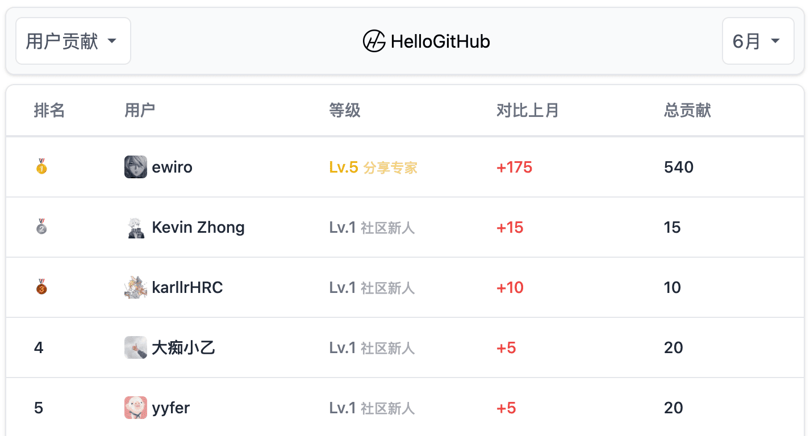
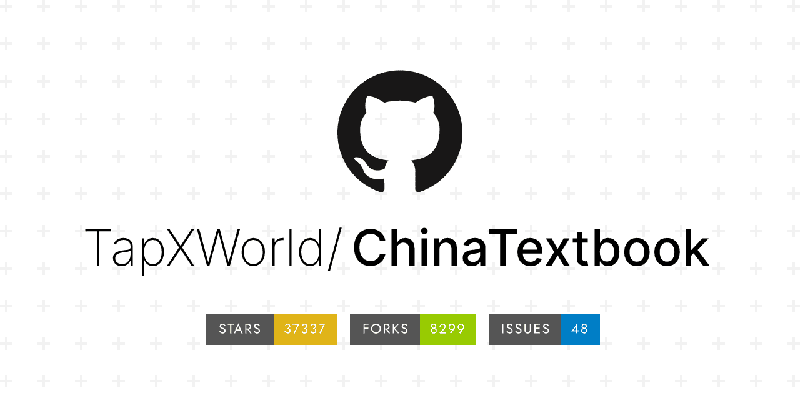

说到 MP4，你首先会想到什么？可能不少人首先想到的都是“小电影”，但最近横空出世的 Memvid 项目却刷新了大家的认知——它巧妙地将 MP4 文件变成了 AI 记忆库，让视频文件不仅仅是用来观看，更能为 AI 提供持久、高效的记忆能力。Google 不仅在大模型方面持续发力，同时也在端侧小模型领域不断探索。他们最近开源的 gallery 是用 Kotlin 写的手机应用，能让用户在手机端离线体验各种 Edge AI 模型，一经开源便迅速登上 GitHub 热榜。

最后，必须得说一下这个开源项目 ChinaTextbook，它是一个完全免费的国内教材资源集合，涵盖了从小学、中学到大学，各学科的 PDF 教材。这个项目默默维护了整整 5 年，最近才终于被更多人所发现，一个月内增长了近 3 万 Star。作者的初衷是想让更多人能为兴趣而读书，而非仅仅是为了应试。
· 本文目录
· 1\. 热门开源项目
· 1.1 让 MP4 成为你的 AI 记忆库：Memvid
· 1.2 一键生成软件物料清单的工具：syft
· 1.3 极简的项目管理工具：PLANKA
· 1.4 手机上离线体验 AI 模型：gallery
· 1.5 开箱即用的智能体记忆引擎：cognee
· 2\. HelloGitHub 热评
· 2.1 免费开源的教材资源集合：ChinaTextbook
· 2.2 免费高质量 React 动效组件库：uilayouts
· 3\. 结尾
1. 热门开源项目
1.1 让 MP4 成为你的 AI 记忆库：Memvid

主语言：Python，Star：7.1k，周增长：3.7k
这是一个基于视频文件的 AI 记忆库，能够将数百万条文本片段存储在 MP4 文件中。它将大规模文本（知识内容、上下文信息等）压缩嵌入到 MP4 文件中，并支持毫秒级语义搜索、PDF 文件导入和聊天功能。相比传统数据库，这种创新方案不仅上手简单（3 行代码），且无需复杂部署，更易于集成至各种 AI 应用中。
from memvid import MemvidEncoder
import os
# Load documents
encoder = MemvidEncoder(chunk_size=512, overlap=50)
# Add text files
for file in os.listdir("documents"):
with open(f"documents/{file}", "r") as f:
encoder.add_text(f.read(), metadata={"source": file})
# Build optimized video
encoder.build_video(
"knowledge_base.mp4",
"knowledge_index.json",
fps=30, # Higher FPS = more chunks per second
frame_size=512 # Larger frames = more data per frame
)
GitHub 地址→github.com/Olow304/memvid
1.2 一键生成软件物料清单的工具：syft

主语言：Go，Star：7.1k
该项目是用于从容器镜像和文件系统中生成软件物料清单（SBOM）的命令行工具，能够详细展示软件中的包和依赖关系，支持 SPDX、CycloneDX 等主流标准格式，适用于漏洞检测、许可证合规和软件供应链安全等场景。
GitHub 地址→github.com/anchore/syft
1.3 极简的项目管理工具：PLANKA

主语言：JavaScript，Star：9.7k，周增长：500
这是一款看板（Kanban）风格的项目管理工具。它通过直观界面和高效协作设计，简化项目管理流程，支持创建项目、看板、列表、卡片，可灵活拖拽管理任务。多人协作时，所有内容实时同步，无需手动刷新，适合个人或小团队跟踪任务进度。
GitHub 地址→github.com/plankanban/planka
1.4 手机上离线体验 AI 模型：gallery
主语言：Kotlin，Star 10k，周增长：3.5k
该项目由 Google AI Edge 团队开源，旨在让用户能够在手机设备上轻松运行和测试 Edge AI 模型。它开箱即用、轻松切换模型，模型加载后可离线体验 AI 能力，支持多轮对话、图像问答、实时显示模型性能和提示词实验室等功能。目前已支持 Android 客户端，iOS 版本即将推出。
GitHub 地址→github.com/google-ai-edge/gallery
1.5 开箱即用的智能体记忆引擎：cognee

主语言：Python，Star：4.8k，周增长：2.7k
这是一个专为 AI 智能体（Agents）提供记忆功能的 Python 项目，集成了图数据库、知识图谱及向量数据库等技术。它仅需 5 行代码，即可轻松为 AI 智能体提供持久化、多模态记忆，支持连接和检索过去的对话、文档、图像和音频转录等内容。
import cognee
import asyncio
async def main():
# Add text to cognee
await cognee.add("Natural language processing (NLP) is an interdisciplinary subfield of computer science and information retrieval.")
# Generate the knowledge graph
await cognee.cognify()
# Query the knowledge graph
results = await cognee.search("Tell me about NLP")
# Display the results
for result in results:
print(result)
if __name__ == '__main__':
asyncio.run(main())
GitHub 地址→github.com/topoteretes/cognee
2. HelloGitHub 热评
在此章节中，我们将为大家介绍本周 HelloGitHub 网站上的热门开源项目，我们不仅希望您能从中收获开源神器和编程知识，更渴望“听”到您的声音。欢迎您与我们分享使用这些开源项目的亲身体验和评价，用最真实反馈为开源项目的作者注入动力。

2.1 免费开源的教材资源集合：ChinaTextbook

主语言：Other
该该项目整理了国内小学、初中、高中及大学等各学科的 PDF 教材，所有资源免费、无水印，支持一键下载，并持续更新。
项目详情→hellogithub.com/repository/TapXWorld/ChinaTextbook
2.2 免费高质量 React 动效组件库：uilayouts
主语言：TypeScript
这是一个专注于创意设计的 React/Next.js 组件库，内含 100 多个基于 Tailwind CSS、Framer Motion 和 GSAP 等技术构建的免费且美观的 UI 组件。
项目详情→hellogithub.com/repository/ui-layouts/uilayouts
3. 结尾
以上就是本期「GitHub 热点速览」的全部内容，希望这些开源项目能激发你的兴趣，找到你下一个想去尝试的工具！如果你也发现了好玩、有趣的 GitHub 开源项目想要分享，欢迎来 HelloGitHub 与我们交流心得、讨论使用体验。
往期回顾
· 揭秘 AI 工具的系统提示词
· 一天 Star 破万的开源项目